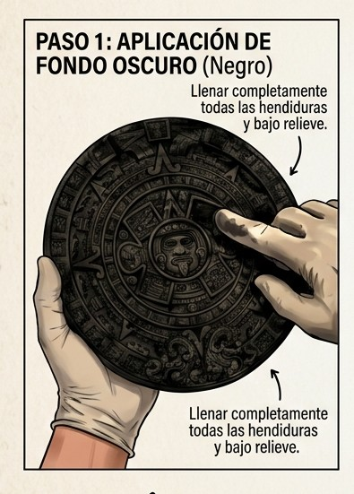
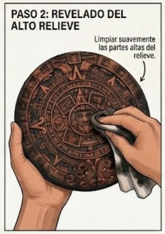
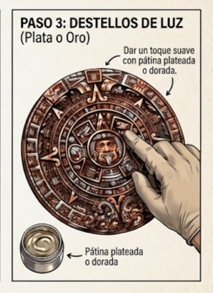

¿Quiénes somos?
Presentación
Museo Digital
Toque una imagen para verla en detalle y más grande.


Proyecto: "Me Reconozco"
Queremos que nuestros hijos, nacidos aquí, conozcan su herencia cultural de una forma mágica y tangible. Acompaña a tu familia en este viaje de identidad. Reúne las 4 piezas magnéticas para tu espejo completando cada actividad artística.
Técnica de Pátina en Alto Relieve
Mira el video demostrativo y sigue los pasos con las ilustraciones de abajo
🎒 Tu Kit Incluye:
• Pieza cerámica prehispánica en alto relieve • Pintura oscura (marrón o negro) • Pintura metalizada (oro o plata) • Guante aplicador • Trapo de algodón limpio y seco.
Guía Visual Paso a Paso
Fondo Oscuro
Cubre toda la pieza con pintura negra o marrón. Asegúrate de llenar bien cada recoveco del relieve para crear la sombra base.

Crear Volumen
Envuelve el trapo seco en tus dedos y limpia suavemente las partes altas del relieve, dejando el fondo oscuro en los valles.

Destellos de Luz
Con el guante puesto, usa la yema de tu dedo con un toque de oro o plata para rozar suavemente los relieves más altos.

📸 ¡No olvides presumir tu obra!
Al terminar, tómale una foto a tu pieza colocada en el espejo y mándala para obtener tu insignia virtual de la **Historia Cultural**.
Eventos
Próximamente compartiremos aquí nuestro calendario de talleres comunitarios y exposiciones culturales.
Próximas clases
Mantente al tanto de nuestros próximos horarios y ubicaciones para asistir con toda tu familia.
Videos y vivencias
Aquí compartiremos memorias de los talleres, testimonios e historias de nuestra comunidad viviendo el arte con sus propias manos.
Tienda
Piezas Chicas


Piezas Medianas


Piezas Grandes

Contacto
¿Tienes dudas o quieres agendar un taller? Contáctanos y con gusto te atenderemos.
Donaciones
Tu apoyo nos ayuda a seguir distribuyendo kits artísticos y educativos a más escuelas y familias de la comunidad.